Саміт для фахівців з протезування, фізичної реабілітації та комплексного відновлення людей після ампутації.
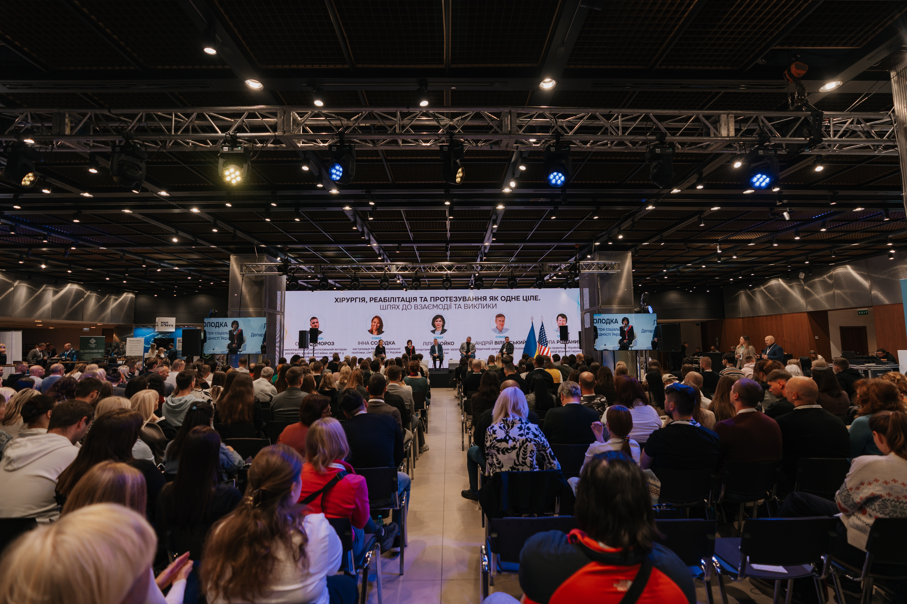
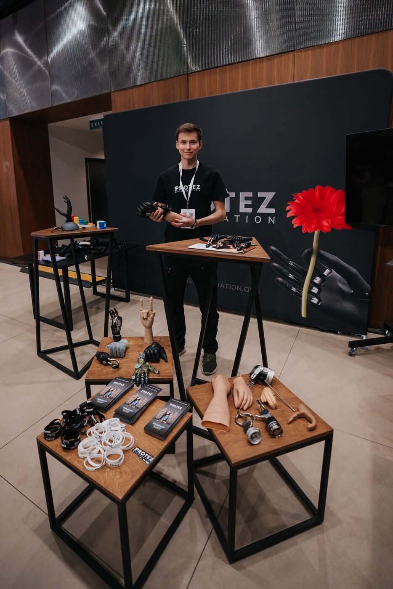
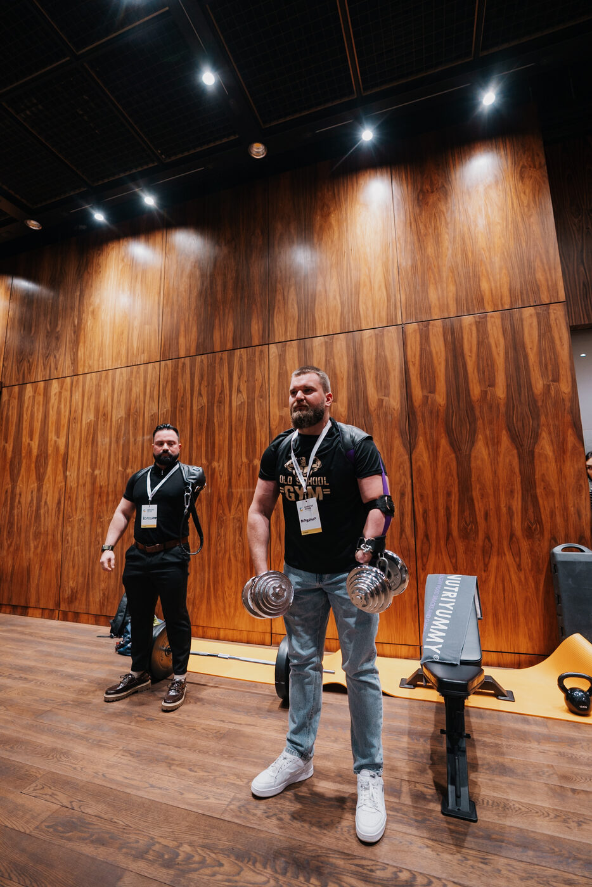
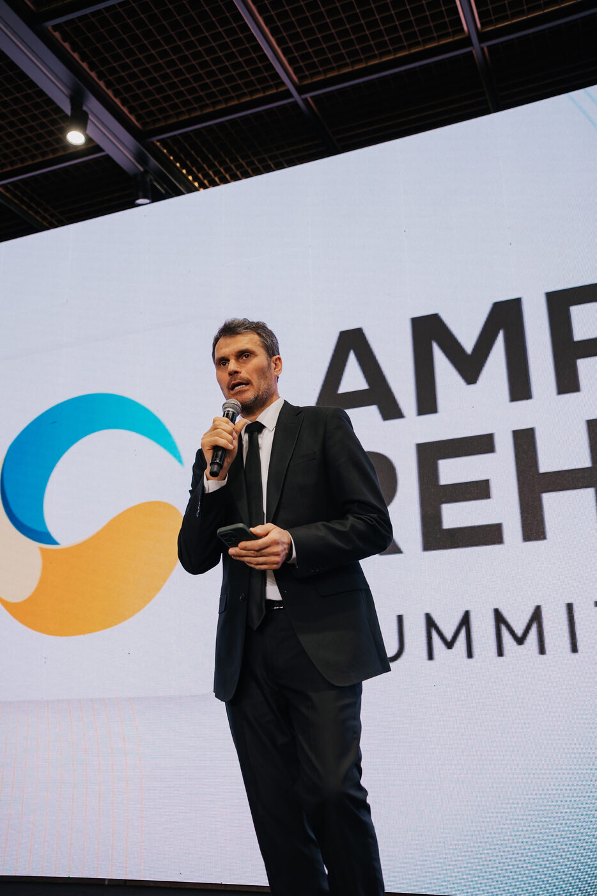
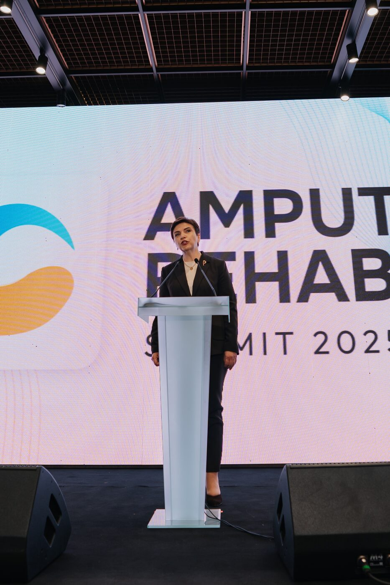
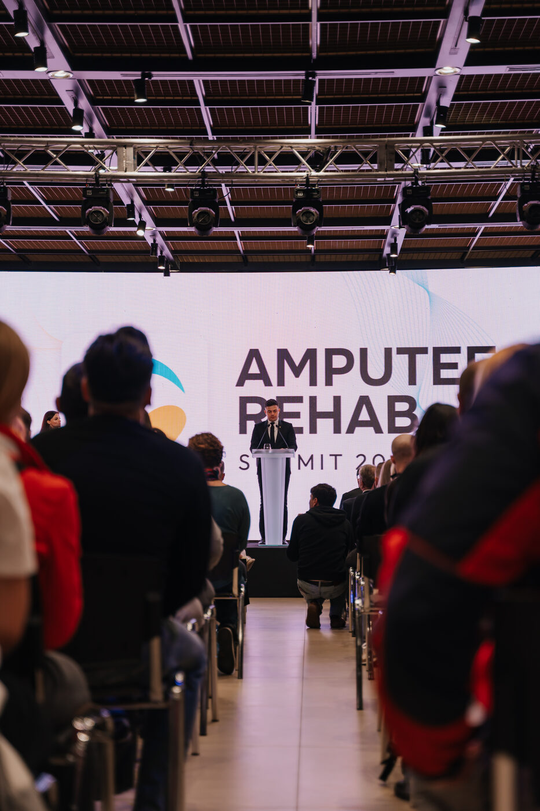
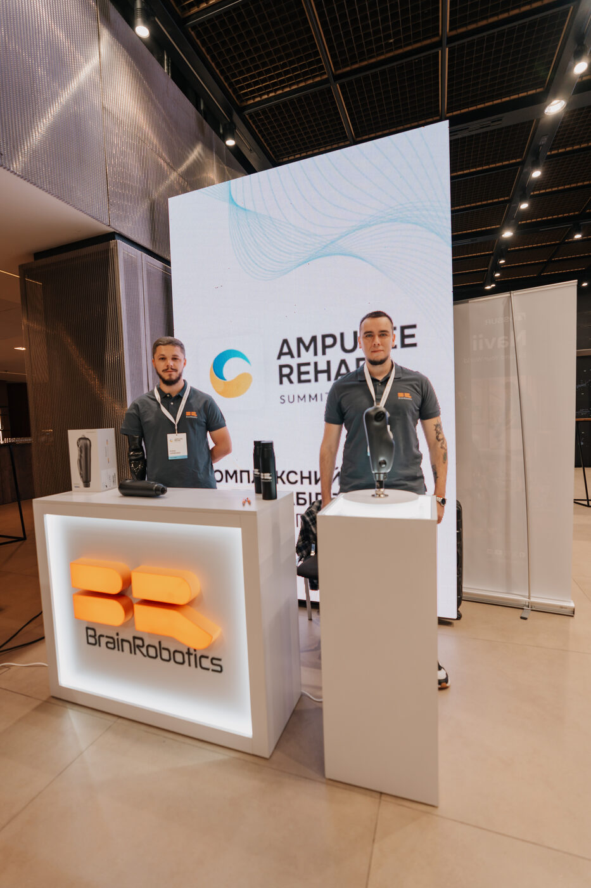
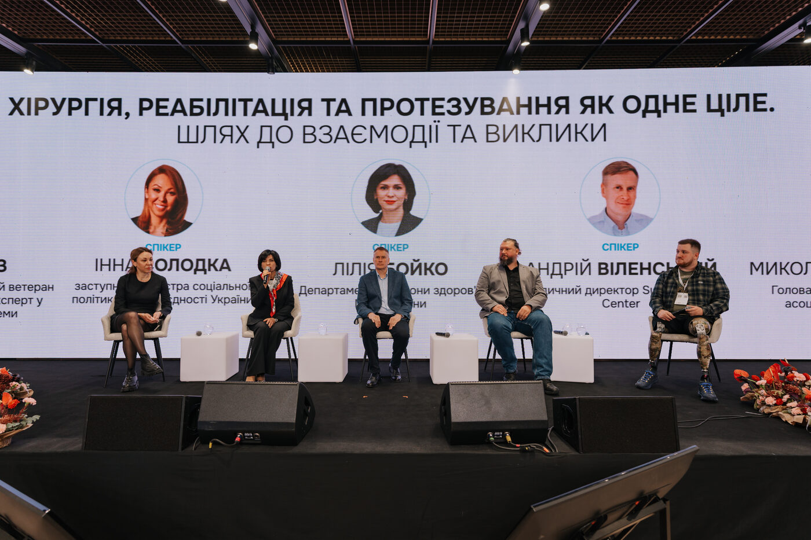
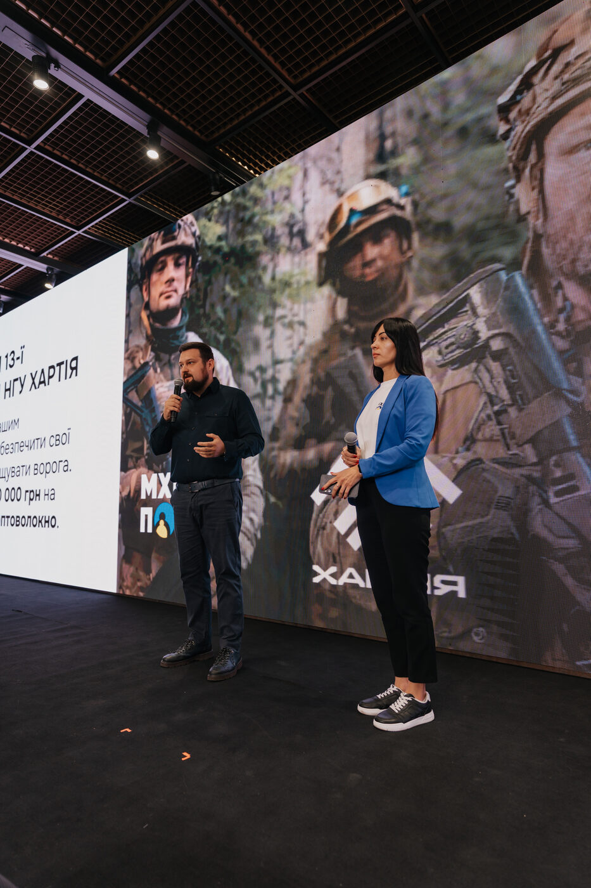
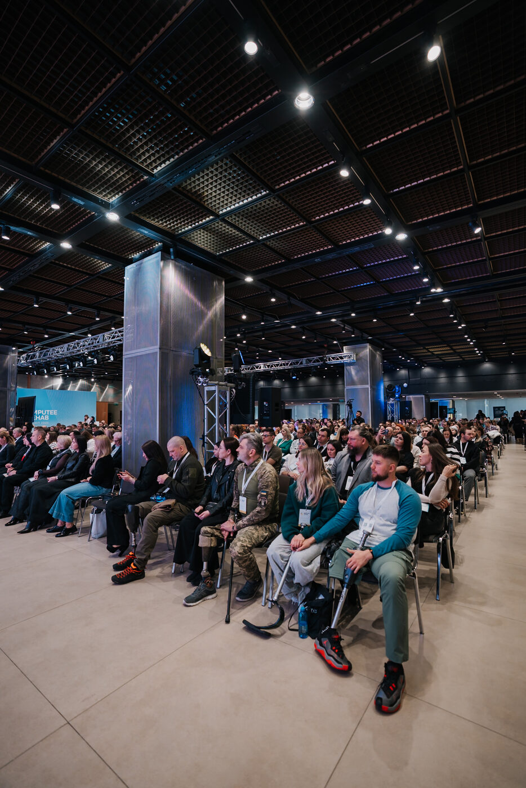
Amputee Rehab Summit — це найбільша в Україні міжнародна освітня подія, організована Protez Foundation та Protez Academy, присвячена сучасному протезуванню, фізичній реабілітації та комплексному відновленню людей після ампутації.
Мета заходу – об’єднати українських та міжнародних експертів, протезистів, хірургів, фізичних терапевтів, ерготерапевтів, медичних фахівців, представників державного сектору, громадських організацій і партнерів навколо спільної місії: підвищення якості протезування та допомоги людям з ампутаціями в Україні. Для Protez Foundation Amputee Rehab Summit є важливою частиною системної роботи з розвитку галузі.
Захід проводиться четвертий рік поспіль і створює платформу для фахових дискусій, навчання, презентації сучасних підходів, обговорення складних клінічних випадків і пошуку рішень для викликів, які виникають в українській системі допомоги людям після ампутацій.
Заявка на участь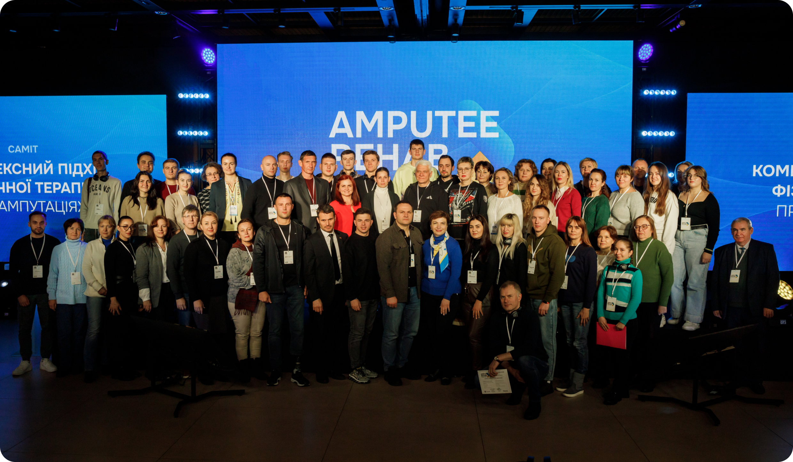
Уперше цього року буде об’єднано одразу три окремі формати в межах одного заходу:
Міжнародний науково-практичний саміт для фахівців.
реєстрація відкрита для всіх фахівців, які працюють у сфері протезування, реабілітації та охорони здоров’я.
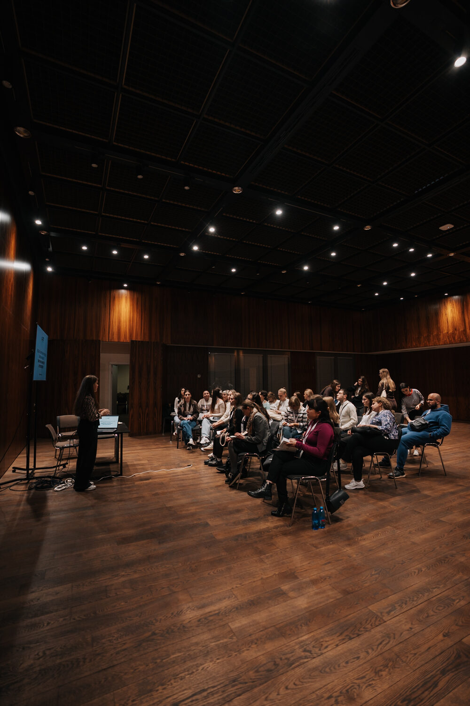
Окремий день для студентів, інтернів і молодих науковців, присвячений професійному розвитку та міжнародному нетворкінгу.
студенти, інтерни, аспіранти, молоді науковці, викладачі та молоді спеціалісти.
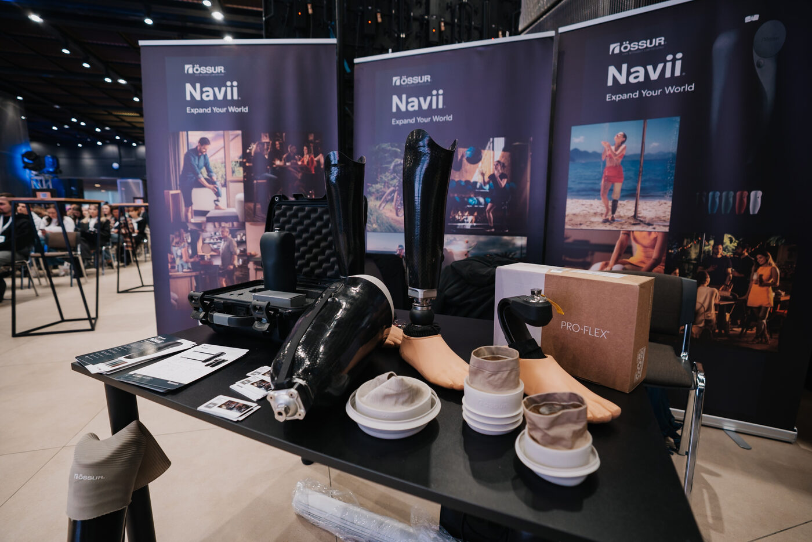
Масштабна виставка сучасних технологій, обладнання та інноваційних рішень у сфері протезування й реабілітації.
окрема реєстрація передбачена для компаній, виробників, технологічних партнерів, благодійних і громадських організацій, які бажають представити свої рішення на виставці.
Програма Саміту охоплюватиме актуальні напрями сучасного протезування та реабілітації:
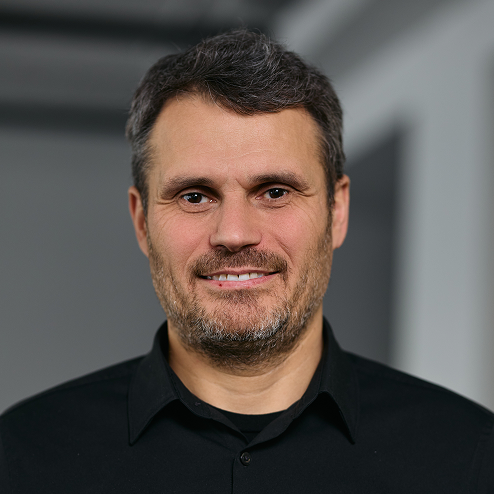
Yakov Gradinar – українець, який переїхав до США у 2007 році
і наразі проживає у Міннеаполісі, штат Міннесота.
Співзасновник, сертифікований протезист-ортезист і головний
медичний директор Protez Foundation. Паралельно пан Яків є
ініціатором створення і лідером освітнього проєкту Protez
Academy, де проводить лекції та майстер-класи для
українських фахівців.
Яків є випускником медичного факультету Ужгородського
Національного Університету (Україна) та University of
Hartford (США) за програмою протезування та ортопедії.
У важкий для України час Яків присвячує свої знання та
професійні навички допомозі українцям, які постраждали
внаслідок війни.
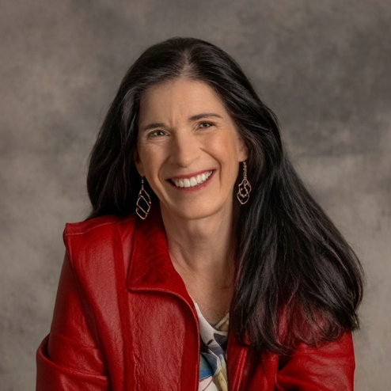
Anita Clerke – акредитована ерготерапевтка та Hand Therapist з Австралії, яка понад багато років працює у сфері реабілітації верхньої кінцівки. Її професійна діяльність зосереджена на відновленні функції кисті після травм, оперативних втручань і складних ушкоджень. Аніта регулярно проводить практичні навчання для фахівців, ділиться сучасними підходами до реабілітації кисті та має великий досвід роботи як клінічний консультант. На Amputee Rehab Summit 2026 вона проведе практичний воркшоп, присвячений сучасним методам терапії кисті та відновленню функції верхньої кінцівки.
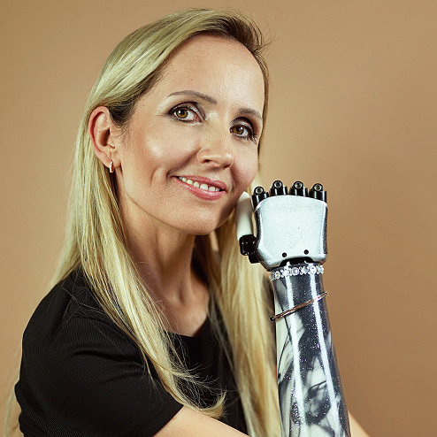
Wioletta Wyrwol – авторка, громадська діячка та амбасадорка інклюзії. Після ампутації верхньої кінцівки вона активно популяризує сучасне протезування, підтримку людей після ампутацій та підвищення обізнаності про життя з протезом. Виступає на міжнародних конференціях, ділиться власним досвідом і є авторкою проєкту «Die einarmige Löwin» («Однорука левиця»).
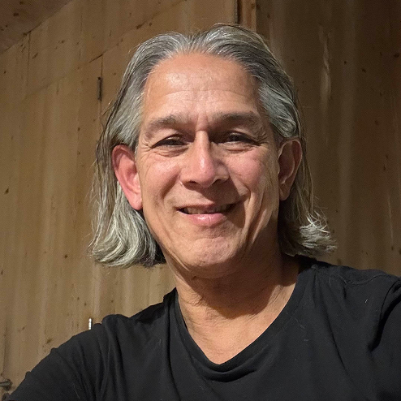
Dr. Ruud Wong Chung – PhD, дослідник та експерт у сфері медичної освіти з Vrije Universiteit Amsterdam. Останні роки він активно працює над розвитком міжнародних освітніх програм для українських реабілітаційних команд у межах ініціативи Netherlands4Superhumans. Він переконаний, що найкращі рішення народжуються через міжнародну співпрацю та обмін практичним досвідом. Саме тому сьогодні бере активну участь у підготовці українських фахівців і розвитку сучасної системи реабілітації.
Дводенний саміт для лікарів, реабілітаційних команд і всіх фахівців, які працюють з людьми після ампутації.
Окремий освітній день, присвячений студентській науці, професійному розвитку та міжнародному нетворкінгу.
Під час реєстрації учасники зможуть обрати формат своєї участі: усна доповідь, постерна презентація, Quiz Challenge або участь як слухач.
Впродовж трьох днів працюватиме спеціалізована виставкова зона, де будуть представлені сучасні рішення для протезування та реабілітації.
Відвідати Expo зможуть усі зареєстровані учасники Саміту, учасники студентського дня, представники компаній, партнерських організацій та медичних закладів.
Amputee Rehab Expo 2026 — перша масштабна виставка інновацій
й актуальних технологій у сфері протезування та
реабілітації, реалізована як окремий проєкт у межах
щорічного саміту Amputee Rehab Summit.
Обирайте зону розміщення своєї локації та залишайте заявку
за посиланням.
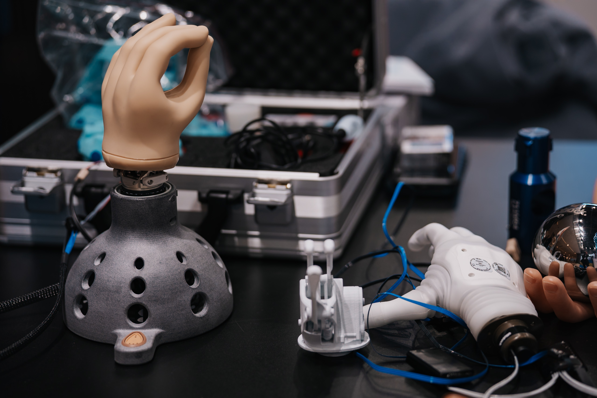
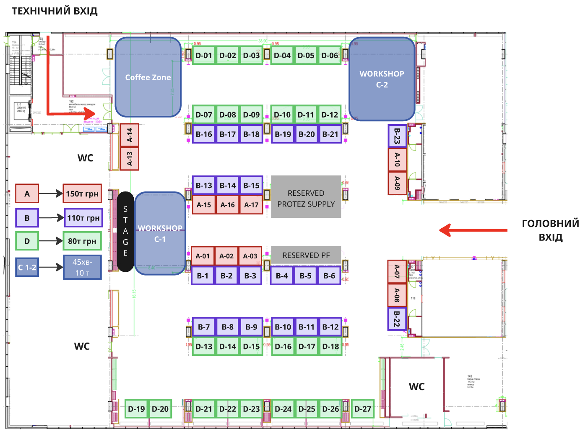
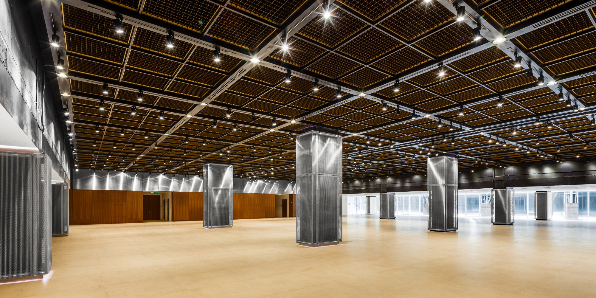
Якщо ви бажаєте розглянути кастомне розміщення локації у
виставковому просторі, вкажіть, будь ласка, про це під час
подання заявки.
Переглянути актуальний стан бронювання локацій можна за
посиланням нижче.
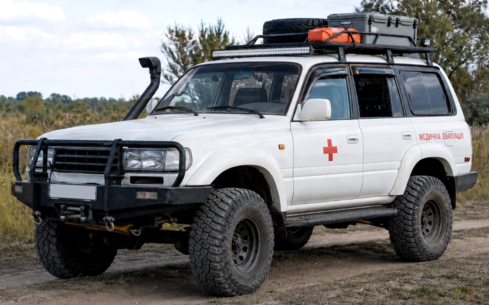
Цьогоріч у межах четвертого Amputee Rehab Summit ми
ініціювали збір коштів для Сил оборони України.
Сьогодні пікапи є важливою складовою роботи військових
підрозділів. Вони забезпечують мобільність, допомагають
доставляти та евакуйовувати поранених, зберігаючи найцінніше
— людські життя.
Кожен внесок — це підтримка наших захисників і захисниць та
внесок у забезпечення їх транспортом.
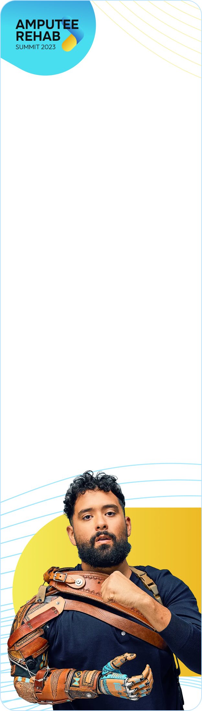
Спеціальна зустріч в рамках Amputee Rehab Summit, організована для українських військових, які втратили верхні кінцівки, з американським військовим Sebastian
Зустріч буде проходити в окремому залі